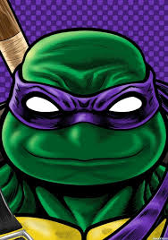

Третий приёмный сын Сплинтера и приемный брат Карай, но он - родной брат Леонардо, Рафаэля и Микеланджело. Донни ученый, механик и изобретатель, отвечающий за разработку и производство всех инструментов, гаджетов, брони, транспортных средств и оружия в арсенале Черепах, а также талантливый хаккер. С фиолетовой повязкой на голове он сражается с помощью посоха Бо, который также превращается в нагинату (японская алебарда) с помощью клинка в одном конце деревянного посоха. В этой версии Донни очень сильно влюблен в Эйприл (которая также находится в юношеском возрасте в этой адаптации) и соперничество с Кейси из-за этого. Его боевой посох теперь превращается в нагинату, позволяя ему овладеть еще одним навыком ниндзюцу.
Донни - мутировавший антропоморфный подросток-черепаха-ниндзя с оливковой кожей. В отличие от всех его предыдущих воплощений, у этой новой, обновленной версии Донни есть промежуток между зубами в дополнение к более высокому и стройному телу с красно-карие глазами. Также имеет яйцеобразную голову. Как и большинство воплощений, он носит фиолетовую маску, где хвосты маски длиннее, чем у любого из его братьев, кроме Рафа. Его ниндзя-снаряжение состоит из коричневых наколенников и налокотников, светло-коричневых повязок, обернутых вокруг его лодыжек, запястий и белых повязок, обернутых вокруг его пальцев.
Донателло невероятно креативный и умный. Он невероятно опытный учёный, имея «путь с машинами». Он профи ученый, механик и математик. Он посвятил много времени изучению технологий, биологии, физики, химии, математики и металлургии. Именно Донни изобретает много машин и гаджетов, которые могут быть полезны в битвах. Являясь опытным мастером ниндзюцу, он часто больше верит в свои знания и изобретения, чем в более духовные советы, которым его научил мастер Сплинтер. Несмотря на свой ум и знания, Донни часто склонен усложнять проблемы и переосмысливать вещи. Вероятнее это от того, что Донни часто всё пропускает, через свой ум, и ему сложно понять духовные наставления, поверить и действовать интуитивно и не думая, так как Донни обычно для того, что бы что-то получилось нужно понять и узнать умом. Также это касается, и советов Сплинтера, которые в конечном итоге ложатся слишком тяжелым бременем на него, и причиняют последствия. Донателло очень мягок, сентиментальный, умеет быть нежным и понимающим, любящий и романтичный. Он влюблен в Эйприл, и порой очень трудно с ней разговаривать. Эйприл могла иногда целовать его. Его друг и соперник, Кейси, также влюблен в Эйприл, и это может вызвать напряженность в отношениях между ними. Донни также социально неуклюжий, так как часто не понимает других и сложно говорит, что заставляет его братьев, особенно Рафаэля и его друга Кейси, издеваться над ним. Также его манера говорить, может вызвать проблемы, так как Донни часто говорит сложно и с научными терминами. Когда он пытается объяснить свое изобретение или часть плана команде, команда не понимает, что он говорит, что иногда может расстраивать.
Несмотря на сообразительность Донни, он может быть очень нервным. Он ненавидит, когда его бросают братья, особенно Лео и Раф в трудных ситуациях. Его сильно раздражает, когда Лео давит на него, чтобы было как надо. Также злится когда что то ломается, особенно когда это его изобретение. Донни часто не выдерживает давления, и часто не стрессоустойчивый. Также Донни очень раздражительный и импульсивный, но не такой злой и жестокий, как Раф. Также Донни сильно упрям и может спорить. Донни часто орёт на Микки, когда он мешает или трогает изобретения, как Раф набрасываясь на Микки. Но несмотря на это, Донни в целом сострадательный характер и будет поддерживать Микки.В этой версии Донателло владеет деревянным длинным посохом Бо, который, как и его братья с их индивидуально подобранным оружием, обладает высокой квалификацией, крутя его как копье и размахивая им как бейсбольной битой. Его посох Бо, может также превращаться в копье Нагината с помощью механизма поворота. В космосе использовал прибор похожий на шест Бо, который анализирует степень поломки и бьёт током. В 5 сезоне в 14-17 сериях в арке про Монстров, использовал наконечник-крест с камнем, который излучает свет убийственный для монстров, если поверить.